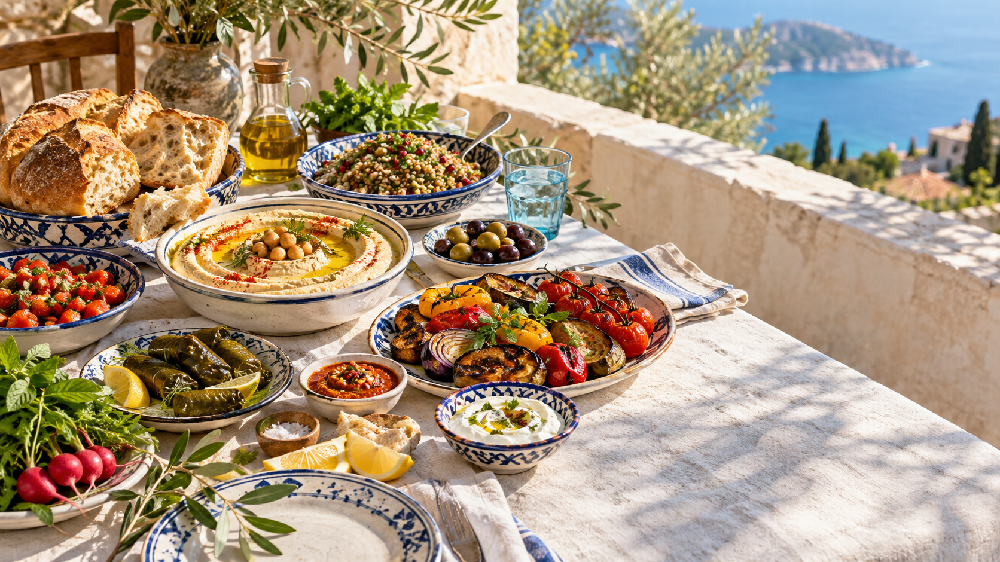

Bread stories
Kubaneh: the slow-baked bread made for sharing
Golden at the edges and cloud-soft inside, this pull-apart bread carries a long journey from Yemen into kitchens and restaurant tables around the world.
Read the storyFood · People · Places
We follow dishes across coastlines and cultures, from the breads people tear by hand to the places in Singapore giving old recipes a new rhythm.
Read our bread guide
01Shared plates, bright flavours, no borders.
From the editor
“The most interesting food has never stayed neatly inside a border. It moves with people, memory and appetite.”
That is the territory we explore: not authenticity as a fixed rule, but the routes, rituals and cooks that give a dish its meaning.
 Hands on
Hands onBread stories
Golden at the edges and cloud-soft inside, this pull-apart bread carries a long journey from Yemen into kitchens and restaurant tables around the world.
Read the storyLearn the table
Short guides to what they are, where they come from and how to enjoy them.
Grains
How young roasted wheat became the smoky backbone of soups, pilafs and contemporary plates.
Open the field guideSweets
One name, many regional styles—and an ongoing conversation about cheese, syrup and texture.
Open the field guideThe basics
The pleasure is in the rhythm: cool, hot, creamy, sharp, something fresh, then bread again.
Open the field guideBalkans
Peppers, pastry, grilled meat, cultured dairy—and the histories that keep crossing the plate.
Open the field guideSingapore addresses
Restaurants bringing Mediterranean and Middle Eastern ideas into the city in distinct ways.
01
Middle Eastern and Balkan flavours meet a spirited, modern dining room. Come for warm bread, flame-kissed plates and the kind of dinner that becomes a night out.
Visit the restaurant02
A lively contemporary take on Middle Eastern dining, from long brunches to dinner and drinks.
03
Mediterranean ideas, produce-led cooking and a polished room made for sharing.
Our recommendations are selected for editorial relevance. Commercial relationships, where applicable, are disclosed in the story.